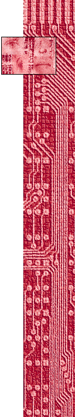

Public Information: Desire,Disaster, Document
at the San Fransisco MOMA
by The Anti-Artist and PDQ

Curator's Statement:
Sharing the belief that the ubiquity of photographic and other technologically produced images--their application and interpretation--is a crucial concern in contemporary art, the four curators completed the selection of an exhibition that, while not intented to be a comprehensive survey, explores a broad range of issues--formal, social, moral and technological. The curators decided to present substantial segments of work by fifteen artists who span three generations, from the mid-1950s to the present, and who possess an ability to create art of exceptional visual quality that is combined with a blinders-off, deeply perceptive grasp of the state of contemporary culture. At a time when
there seems not to be a demonstrably dominant tendencey, the line this exhibition traces through the recent past is surely not the only one that might have been drawn. It is one, however, that we trust will prove to have lasting validity.